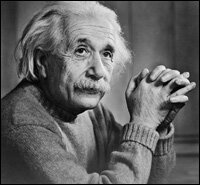

Albert Einstein
(E=mc2)

Physicist, Scientist (1879-1955)
10 Things You Didn't Know About Albert Einstein
- He never failed math. This is a popular "fact" promoted on the internet, maybe in an attempt to relate to genius. However, it is simply not true. Overall, Einstein was an average student, but math was one area where he excelled, unsurprisingly.
- Einstein encouraged the development of the nuclear bomb. His involvement is often misinterpreted, with some claiming that he helped create the atom bomb. In reality, what he did was write a letter to President FDR encouraging him to begin work on such a weapon, which led to the Manhattan Project. Although a dedicated pacifist and, later, an anti-nuke spokesman, Einstein was convinced that America needed the atomic bomb before the Nazis
- He was a great musician. If the whole "genius" thing didn't work out, Einstein could have become a violinist. His mother played piano so he had the love of music instilled in him—via violin lessons—at the young age of five.
- He could have been the President of Israel. When Israel's first president, Chaim Weizmann, died, Einstein was offered the position, but he declined.
- He married his cousin. After Einstein divorced his first wife, Mileva Maric, he married his cousin, Elsa Lowenthal. He was, actually, quite a bad husband to his first wife in their later years. He had affairs he never tried to hide, he moved the entire family to Berlin without discussion, and treated her more as a servant than a wife.
- He won the 1921 Nobel Prize for Physics. This alone isn't particularly surprising. What is surprising is the fact that he didn't receive it for the general or special theory of relativity, but rather for the photoelectric effect.
- He loved to sail. Ever since university, Einstein sailed as a hobby. But by his own admission, he never made a particularly good sailor. In fact, he didn't even know how to swim.
- He really didn't like socks, and usually didn't wear them. In fact, in a letter to Elsa, he bragged about getting away "without wearing socks" while at Oxford.
- He had an illegitimate daughter. This wasn't known until the 1980s, but according to correspondence between Albert and Mileva it was determined that the two had a daughter in 1902 called Lieserl. At one point, all mention of her in letters stopped so her fate is unknown.
- His brain was stolen. After Einstein died, the pathologist who did his autopsy took his brain without permission. He eventually got the permission necessary from Einstein's son, but he was fired from Princeton when he refused to turn the brain over. He kept it for over forty years before finally returning it in 1998.
"The important thing is not to stop questioning. Curiosity has its own reason for existing."
--Albert Einstein
If you want to know more about this incredible human being,Click here.